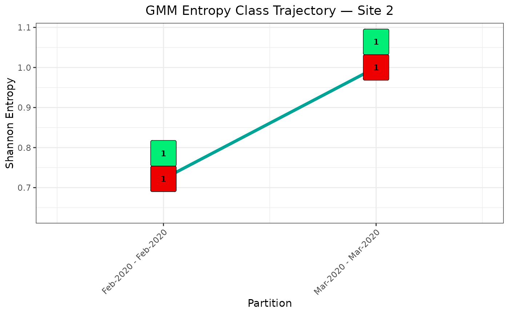

Plot GMM Entropy Class Trajectory for a Single Site
Source:R/plot_site_class_trajectory.R
plot_site_class_trajectory.RdPlots the Shannon entropy trajectory for a single sequence site across time partitions, with geom-label overlays at each partition recording the site's current GMM class (above the line, in green) and the partition's highest-entropy class label (below the line, in red). The visual contrast between the two labels tracks the moment a site enters the highest-entropy cluster — the entropy-based analogue of variant emergence detection.
Usage
plot_site_class_trajectory(
data_frame,
site,
site_color = "steelblue",
xbreaks,
xlabels,
col_current = "springgreen2",
col_max_class = "red2",
label_size = 3,
x_angle = 45,
line_size = 1.5,
plot_title = NULL,
save = FALSE,
save_path = getwd(),
save_extension = ".png",
width = 20,
height = 15,
dpi = 300
)Arguments
- data_frame
Data frame. The
$Data_Frameelement fromplot_entropy_trajectories. Must contain columnssites,entropies,class,max_class,period, andcoverage.- site
Integer (length 1). The site index to plot. Must be present in
data_frame$sites.- site_color
Character. Colour of the entropy trajectory line. Default is
"steelblue". Passplot_entropy_trajectories()$Colors[as.character(site)]for cross-plot colour consistency.- xbreaks
Integer vector. Partition period indices for x-axis breaks. Typically
plot_entropy_trajectories()$XBreaks.- xlabels
Character vector. Partition label strings aligned with
xbreaks. Typicallyplot_entropy_trajectories()$XLabels.- col_current
Character. Fill colour of the upper geom-label (current GMM class at each partition). Default is
"springgreen2".- col_max_class
Character. Fill colour of the lower geom-label (highest-entropy class label at each partition). Default is
"red2".- label_size
Numeric. Font size of the class integer text inside the geom-labels. Default is
3.- x_angle
Numeric. Rotation angle of x-axis tick labels in degrees. Default is
45.- line_size
Numeric. Width of the entropy trajectory line. Default is
1.5.- plot_title
Character or
NULL. Plot title. IfNULL(default), the title is auto-generated as"GMM Entropy Class Trajectory \u2014 Site <site>".- save
Logical. If
TRUE, the plot is saved to disk viaggsave. Default isFALSE.- save_path
Character. Directory in which to save the file. Created recursively if it does not exist. Default is
getwd().- save_extension
Character. File extension including the leading dot (e.g.
".jpeg",".pdf",".png"). Default is".jpeg".- width
Numeric. Saved figure width in inches. Default is
20.- height
Numeric. Saved figure height in inches. Default is
15.- dpi
Numeric. Resolution of the saved raster output in dots per inch. Default is
600.
Value
A ggplot object (returned invisibly). Additional
ggplot2 layers can be appended with + before printing or
saving, for example:
p <- plot_site_class_trajectory(traj$Data_Frame, site = 681L, ...)
p + ggplot2::geom_vline(xintercept = 14, colour = "darkorange",
linetype = "dashed", linewidth = 1.5)
Details
The function operates on the $Data_Frame element returned by
plot_entropy_trajectories, which contains columns
sites, entropies, class, max_class,
period, and coverage.
Class label interpretation. The green label (upper) records the
GMM class assigned to the site in that partition; the red label (lower)
records max_class — the label of the highest-entropy component for
that partition. When the two labels are equal the site has entered the
highest-entropy class. Without relabeling, max_class is the raw
Mclust label carrying the highest mean entropy (i.e.
max(classification) at clustering time). When the user has
pre-relabeled the partitions via relabel_entropy_classes
before calling plot_entropy_trajectories, max_class
is 1L throughout (class 1 is the highest-entropy group by
definition), and the sentinel 999L is preserved unchanged.
Axis padding. Both axes carry generous expansion margins so that
geom-label boxes at extreme entropy values or at the first and last
partitions do not clip the panel border. The returned ggplot object
can be further adjusted by appending standard ggplot2 layers with
+ before printing or saving.
Examples
# Shared synthetic dataset used across all three examples.
# Partition entropies (bits):
# Jan s1: 0.000 s2: 0.000 — both removed (zero entropy)
# Feb s1: 0.000 s2: 0.722 — s1 removed, s2 retained
# Mar s1: 0.971 s2: 1.000 — both retained
# Apr s1: 0.881 s2: 0.722 — both retained
df <- data.frame(
s1 = c(rep(1L, 10L),
rep(1L, 10L),
c(1L, 1L, 1L, 1L, 1L, 1L, 2L, 2L, 2L, 2L),
c(1L, 1L, 1L, 2L, 2L, 2L, 2L, 2L, 2L, 2L)),
s2 = c(rep(1L, 10L),
c(1L, 1L, 1L, 1L, 1L, 1L, 1L, 1L, 2L, 2L),
c(1L, 1L, 1L, 1L, 1L, 2L, 2L, 2L, 2L, 2L),
c(1L, 1L, 2L, 2L, 2L, 2L, 2L, 2L, 2L, 2L)),
Date = rep(
seq(as.Date("2020-01-01"), by = "month", length.out = 4L),
each = 10L
)
)
part_data <- partition_time_windows(
data = df,
n_sites = 2L,
window_length = 1L,
window_type = 3L,
start_date = "2020-01-01",
end_date = "2020-04-01"
)
# Example 1: without relabeling — class labels are as assigned by Mclust.
traj <- plot_entropy_trajectories(part_data)
p1 <- plot_site_class_trajectory(
data_frame = traj$Data_Frame,
site = 2L,
site_color = traj$Colors["2"],
xbreaks = traj$XBreaks,
xlabels = traj$XLabels
)
print(p1)
